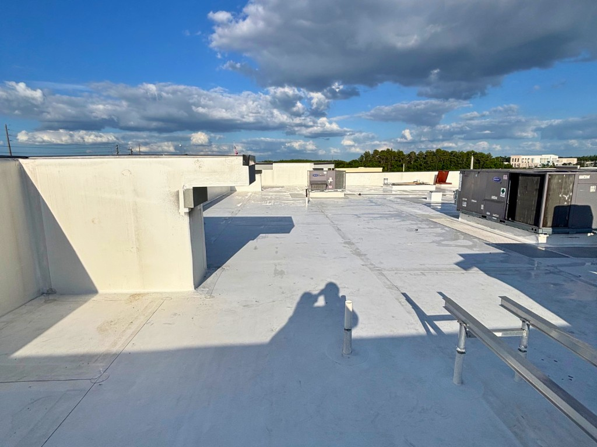
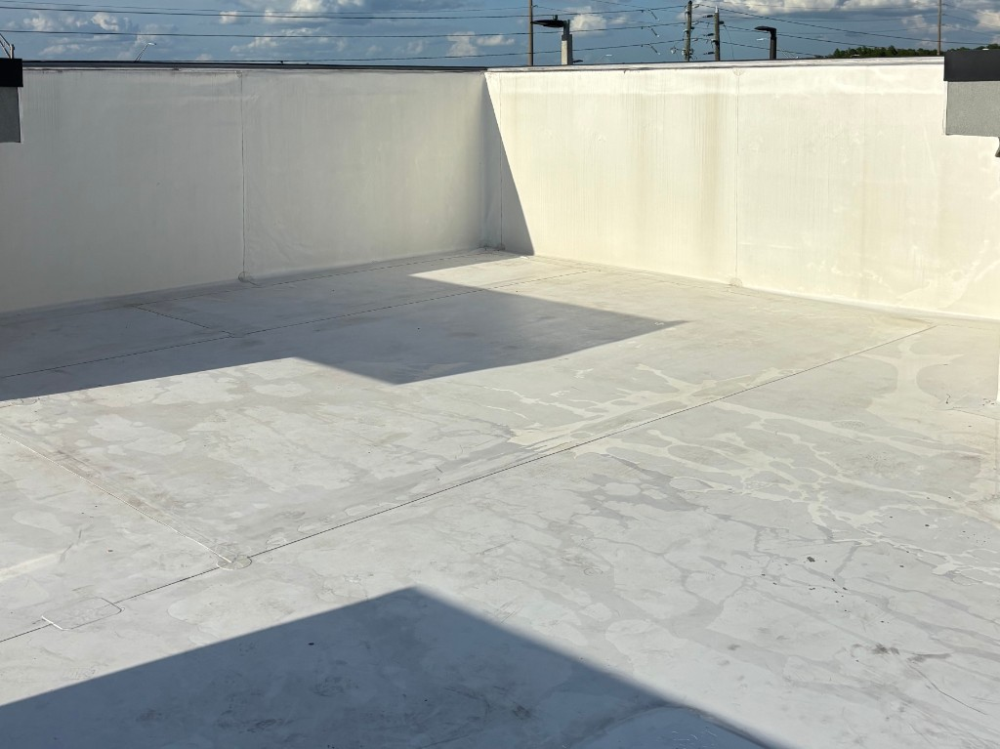
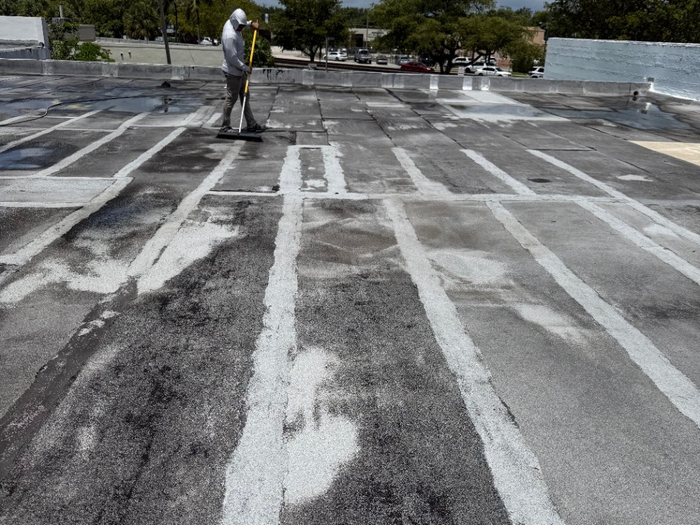

★★★★★
“I couldn’t be happier with the work Preferred Power Washing did. Jordan was professional, on time, and paid attention to every detail.”
Jesse HavenGoogle review

Soft washing is how we clean roofs, stucco, siding, screen cages, and painted exteriors. Instead of high PSI, we use controlled low pressure and detergents made to kill mold, mildew, and algae—so the surface stays intact.




Tile and shingle roofs, TPO membranes, stucco, vinyl, and painted walls can be scarred, driven full of water, or stripped by a pressure washer. Soft washing applies a cleaning solution at garden-hose-level pressure, lets it dwell, then rinses. The organic growth is treated at the root, which is why the result lasts longer in Florida humidity.
Broward, Miami-Dade, and Palm Beach properties deal with year-round moisture, salt air near the coast, and dark organic staining. Soft washing is the method for the surfaces that show that staining first.
View Roof & Exterior WorkAlgae streaks, lichen, and black staining on tile, asphalt, and TPO. We treat the roof, rinse with low pressure, and keep foot traffic and equipment appropriate to the membrane or tile.
Stucco, painted block, vinyl, and fiber-cement siding. Removes mildew film, dirt, and oxidation so the exterior looks even again—often as prep before painting.
Pool cages collect pollen, algae, and oxidation on the screen and frame. A soft wash brightens the enclosure without blowing out mesh or driving water into the house.
Vinyl and painted fences, fascia, and gutters that look chalky or green. These details finish the look after the walls and roof are done.
Office façades, HOA buildings, and managed properties where a uniform wash matters and high pressure would mark the finish.
Soft washing before exterior paint so mildew is not sealed under a new coat. Pair with PPW painting for one coordinated project.
Professional work, clear communication, and results customers are happy to recommend.
“I couldn’t be happier with the work Preferred Power Washing did. Jordan was professional, on time, and paid attention to every detail.”
“Jordan did an amazing job by bringing my property back to life! I completely trust him recleaning my home next time. Highly recommend!”
“We were very happy with the results. Jordan communicated well, was on time, and fair priced. We will definitely use them again.”
Tell us the surface. We’ll recommend the method that will not damage it.